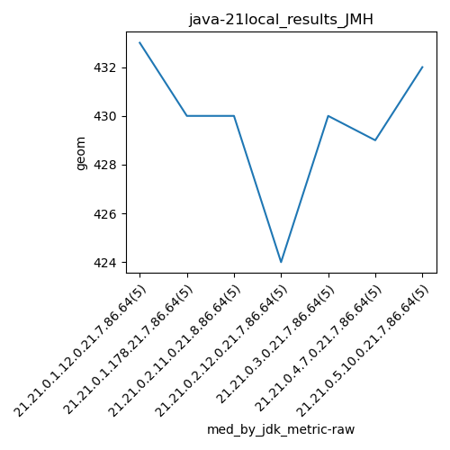

java-21 JMH
Context at bottom
/home/jvanek/git/benchmarks-in-nested-virtualisation-toolchain/final_results/local_results/local_results_J2DBENCH
java-21
JMH
/home/jvanek/git/benchmarks-in-nested-virtualisation-toolchain/final_results/local_results/local_results_SPECJBB
java-21
JMH
/home/jvanek/git/benchmarks-in-nested-virtualisation-toolchain/final_results/local_results/local_results_RADARGUNs1
java-21
JMH
/home/jvanek/git/benchmarks-in-nested-virtualisation-toolchain/final_results/local_results/local_results_RADARGUNs3
java-21
JMH
/home/jvanek/git/benchmarks-in-nested-virtualisation-toolchain/final_results/local_results/local_results_JMH
java-21
JMH
local_results_JMH
final score
Expected number of java-21 JDKs: 7
1st avgmed_alljdks_metric:
/home/jvanek/git/benchmarks-in-nested-virtualisation-toolchain/final_results/result_processing.py /home/jvanek/git/benchmarks-in-nested-virtualisation-toolchain/final_results/local_results/local_results_JMH geom False
values: [434, 433, 434, 433, 433, 431, 430, 430, 430, 430, 430, 429, 430, 429, 431, 422, 422, 424, 426, 425, 428, 431, 429, 430, 430, 429, 430, 429, 429, 429, 432, 431, 434, 429, 432]

Expected number of iterations: 5
final number of values: 35 out of 35
Pass rate: 100.0%
values: (422, 434, 429.65714285714284, 430)

** accuracy from all jdks and runs
more is better
MIN: 422
MAX: 434
AVG: 429.65714285714284
MED: 430
Relative differences 1:
MIN-MAX: 3.0 %
MIN-AVG: 2.0 %
MIN-MED: 2.0 %
MAX-MIN: -3.0 %
MAX-AVG: -1.0 %
MAX-MED: -1.0 %
AVG-MED: 0.0 %
stored to java-21.properties. sort | uniq that!
2nd avgmed_by_jdk_metric:
values: [433.4, 430.2, 429.8, 423.8, 429.6, 429.2, 431.6]
values: [433, 430, 430, 424, 430, 429, 432]

values: (423.8, 433.4, 429.65714285714284, 429.8)
values: (424, 433, 429.7142857142857, 430)

** accuracy from all jdks where runs were avged
more is better
MIN: 423.8
MAX: 433.4
AVG: 429.65714285714284
MED: 429.8
Relative differences 1:
MIN-MAX: 2.0 %
MIN-AVG: 1.0 %
MIN-MED: 1.0 %
MAX-MIN: -2.0 %
MAX-AVG: -1.0 %
MAX-MED: -1.0 %
AVG-MED: 0.0 %
stored to java-21.properties. sort | uniq that!
** accuracy from all jdks where runs were medianed
more is better
MIN: 424
MAX: 433
AVG: 429.7142857142857
MED: 430
Relative differences 1:
MIN-MAX: 2.0 %
MIN-AVG: 1.0 %
MIN-MED: 1.0 %
MAX-MIN: -2.0 %
MAX-AVG: -1.0 %
MAX-MED: -1.0 %
AVG-MED: 0.0 %
stored to java-21.properties. sort | uniq that!
/home/jvanek/git/benchmarks-in-nested-virtualisation-toolchain/final_results/local_results/local_results_DACAPO
java-21
JMH
pass rates:
local_results_JMH=100.0%
Context:
- local_results
- JMH